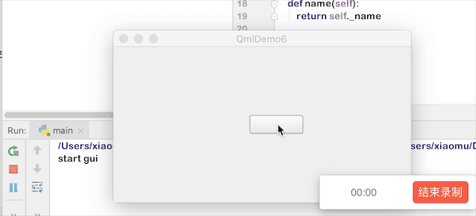
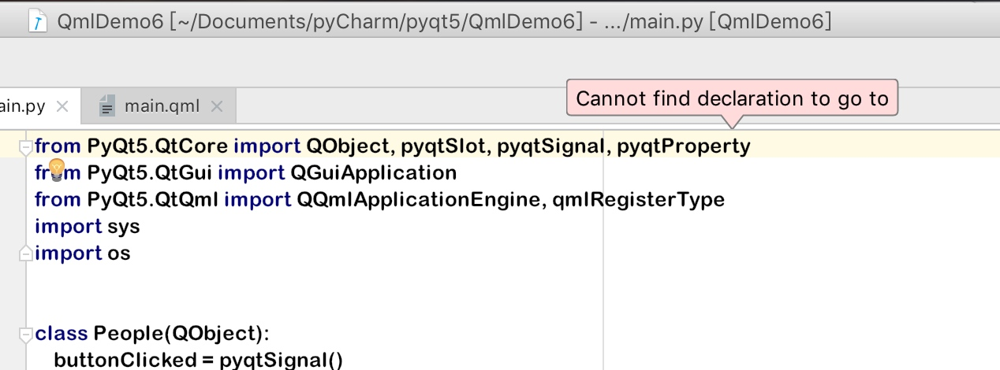
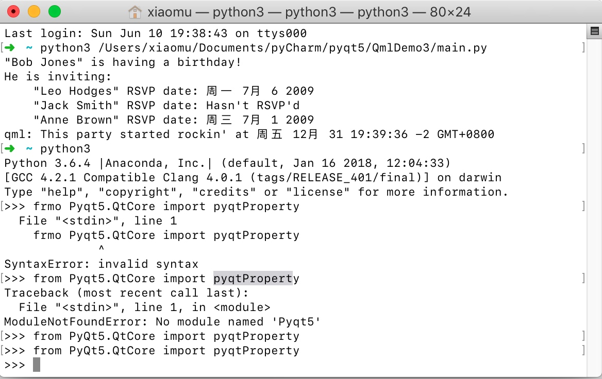

项目需求
- 用pyqt5制作一个基于qml的基础gui程序然后点击按钮就会触发在python中的对象函数，形如：
- 
- 在本例子中，通过继承QT框架中的QObject来注册python对象到QML中，从而达到在qml中使用python对象的目的
步骤：
- 建立pyqt5项目
- 建立main.py文件
1 | from PyQt5.QtCore import QObject, pyqtSlot, pyqtSignal, pyqtProperty |
- qml文件
1 | import QtQuick 2.3 |
跳坑指南：
- 在导入python包的时候IDE有可能会提示找不到这个包，比如说下面这个，请忽略他，有可能是IDE太傻了，并不是这个文件不存在，最好的方法是在命令行下面测试：
- 
- 
- 可以看到这个函数是存在的，我在这里坑了十分钟左右，妈耶。